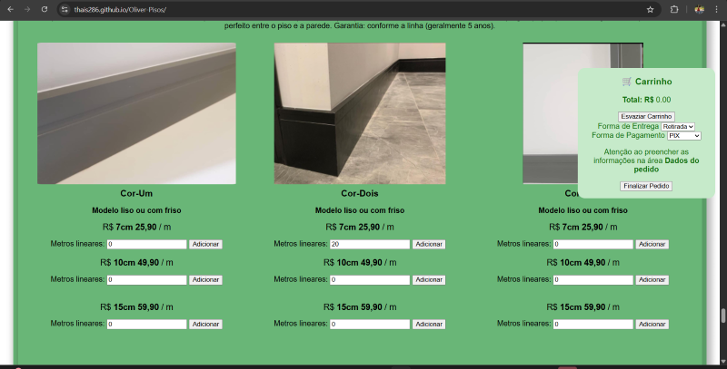
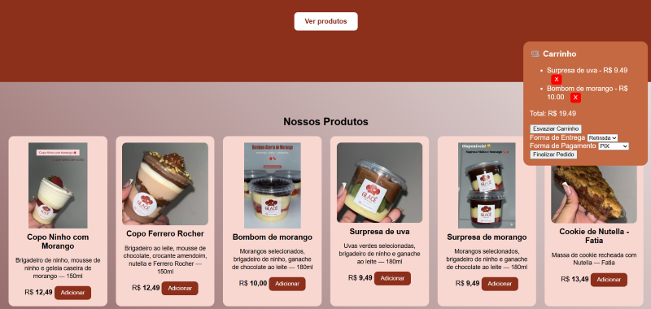
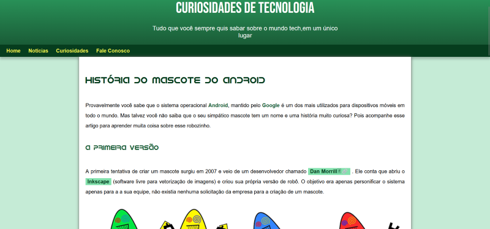
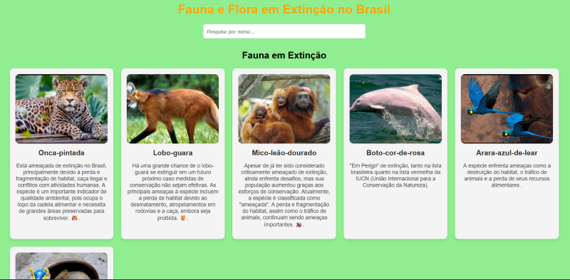

Site Oliver Pisos
Este projeto apresenta uma vitrine completa de pisos laminados, rodapés e pisos vinílicos. O site possui mais de 2000 linhas de código, sendo um projeto robusto, detalhado e cheio de funcionalidades. O cliente pode visualizar todos os produtos e montar um pedido diretamente pelo site. Assim como na confeitaria, todo o pedido vai para o WhatsApp automaticamente, já com formatação limpa e organizada.
 Ver SiteSite Cofeitaria
Este é um site desenvolvido para uma confeitaria, onde o usuário pode visualizar os produtos, ver nome, imagem e preço, e adicionar os itens ao carrinho de compras. O diferencial é que todo o pedido é enviado diretamente para o WhatsApp, já formatado e pronto para envio.
 Ver SiteSite Android
Site criado por mim através das aulas do Curso em Vídeo ministrado pelo professor Gustavo Guanabara . Esse site foi projetado no curso de HTML5,CSS3 com o objetivo de criar um site interativo, bonito, responsivo e atraente. Nele é explicado o surgimento do mascote do Android ,fotos de seu criadora e curiosidades relacionadas ao mascote fofo.
 Ver SiteCódigo feito para por em prática os aprendizados adquiridos na faculdade de análise e desenvolvimento ne sistemas e no curso em vídeo do professor Gustavo Guanabara , contei com a ajuda da IA ,pois enfrentei muitas dificuldades por ser o meu primeiro programa usando HTML ,CSS e JS. Apesar dos diversos bugs ela me ajudou muito no desenvolvimento. O projeto expõe animais e plantas em extinção no Brasil,mostrando as causas pelas quais os levarão a esse estado de futura extinção se medidas eficazes não forem tomadas para mudar esse cenário alarmante .
 Ver SiteAplicação simples em HTML/CSS/JavaScript que permite ao usuário inserir o preço dos combustíveis em três postos diferentes e, ao clicar em comparar, exibe qual posto possui o menor valor eu usuário pode calcular quanto ele economiza em relação aos outros postos.
 Ver Site
Ver SiteContato
Email: thaisamandasilva286@gmail.com
EmailGitHub